tgauweiler / Remote Relay
Introduction
I had the idea to switch a relay over wifi with an app on my smartphone. For this i needed some board with wifi support and at least one GPIO.
So i bought a ESP8266 board in the ESP-01 variant. Mostly because it was so cheap, ~1€. Then i noticed, that programming it, wasn’t working as intended, because the chip needs around 250mW 3.3V to get running and the usb to serial converter wasn’t providing that much power. So I build the given circuit on a breadboard to provide enough power.
Designing platine with Eagle
But since that was pretty ugly I decided to build my own platine for it with Eagle.
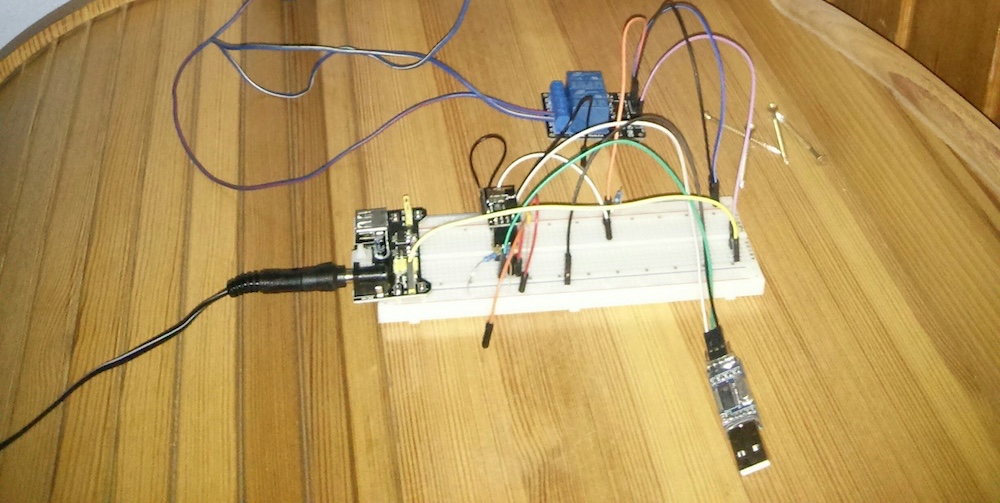
First i crated the electrical schematic.
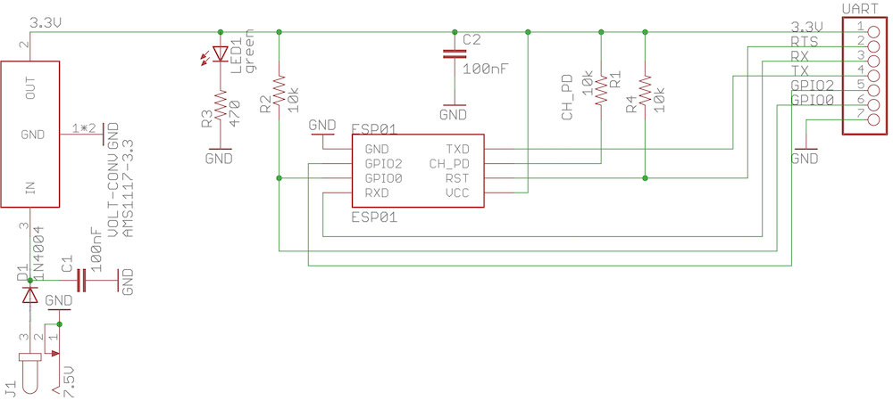
And routed everything as nice as possible.
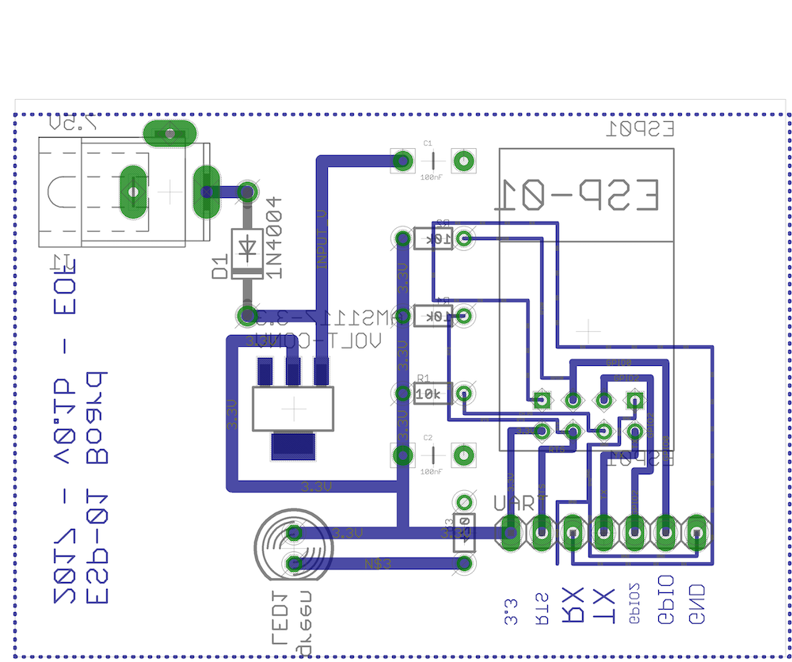
I used the toner transfer method to get the schematic on the platine.
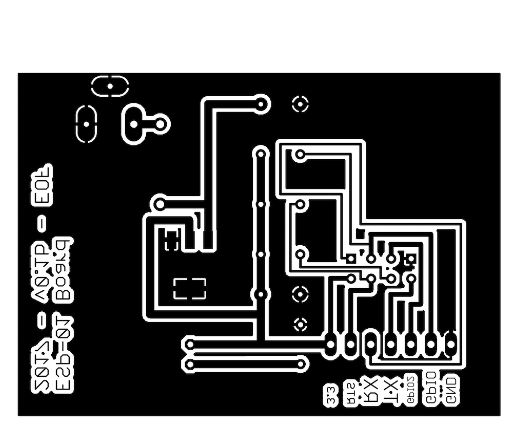
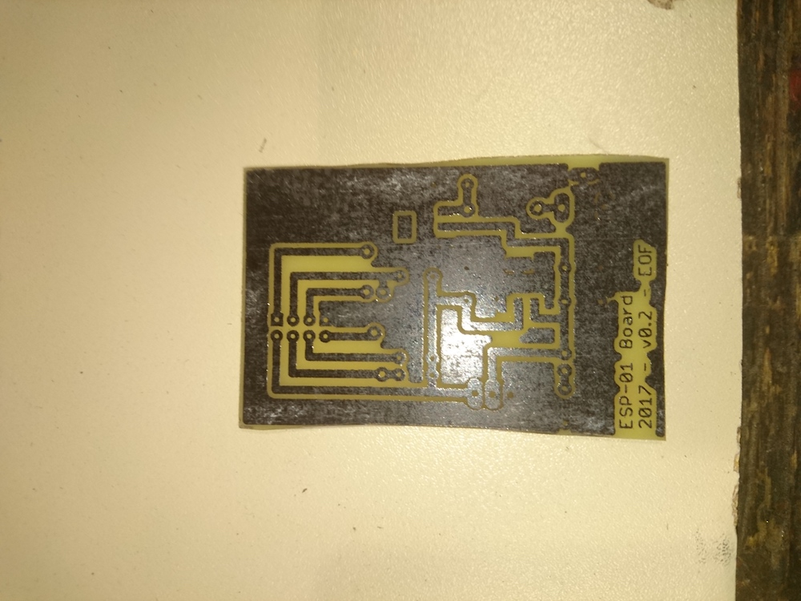
Etched it and removed the toner with aceton.
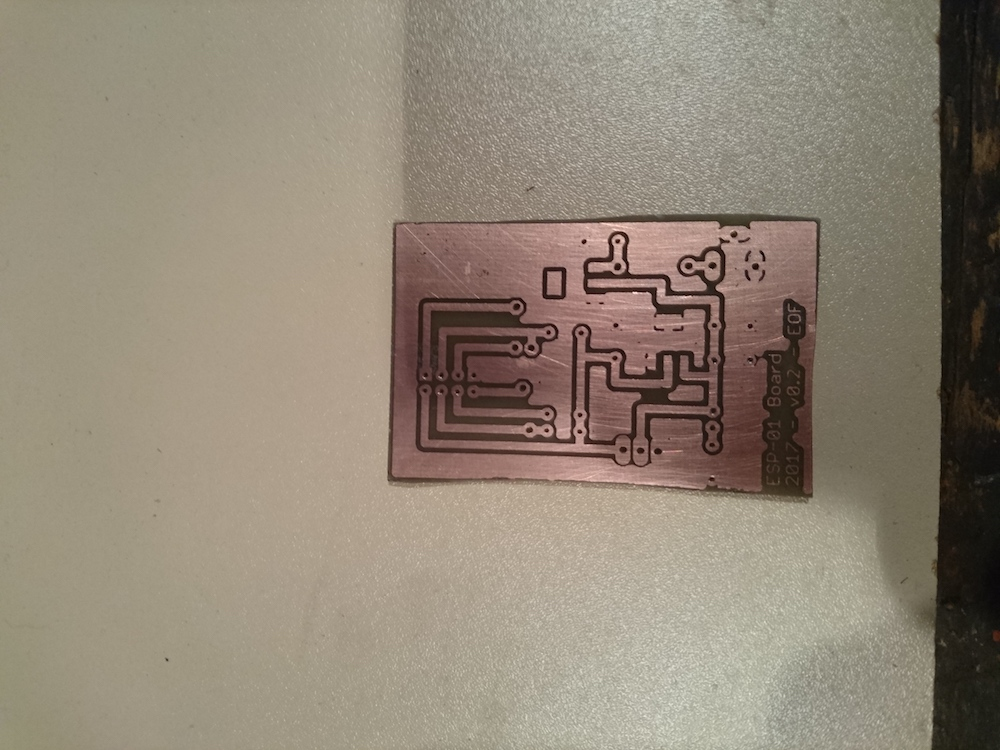
Added the schematic to the top. Drilled all holes and broke a drill.. Found out later that you can just make the pads bigger.
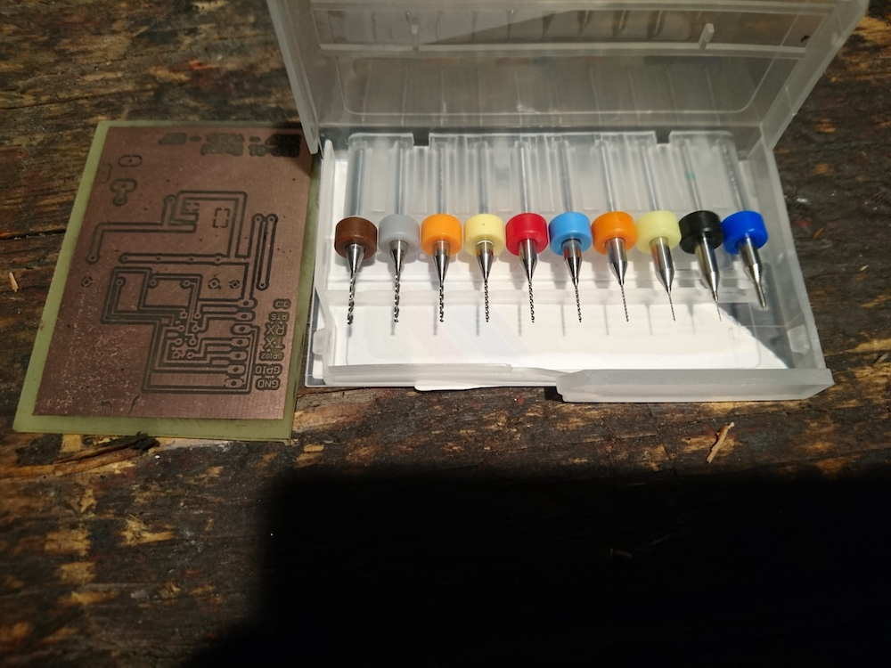 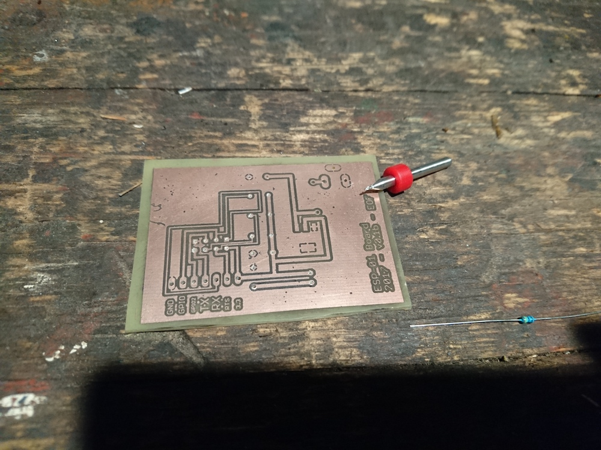 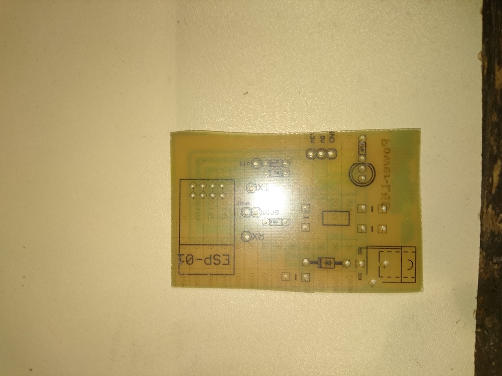
Added the electrical parts.
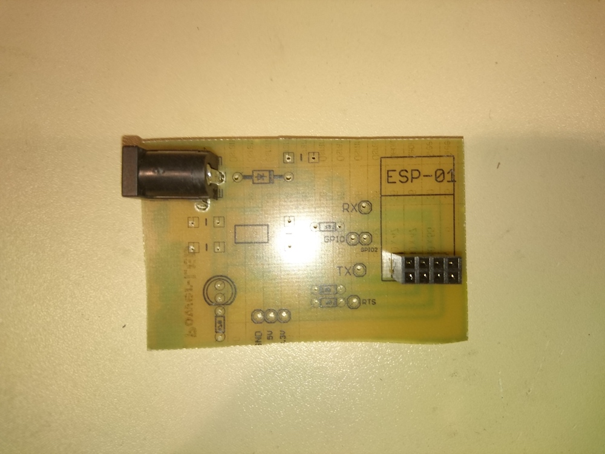 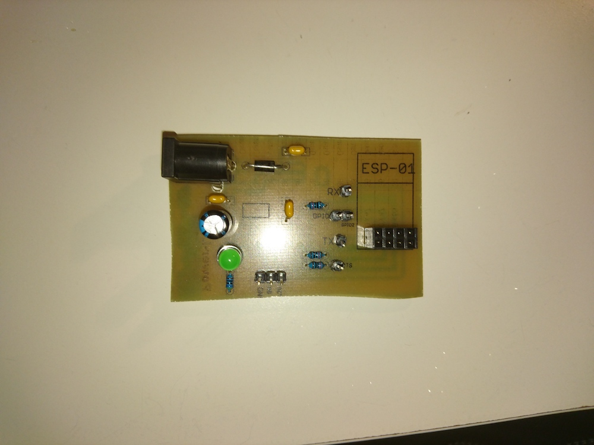
Soldered everything in place.
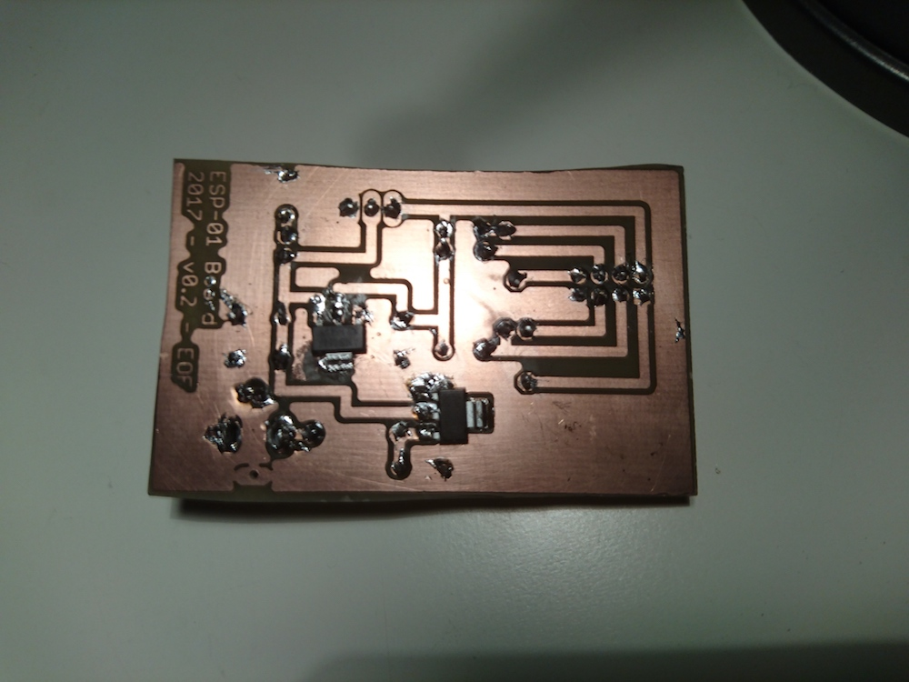
Found an old plastic box that has enough space to fit everything inside.
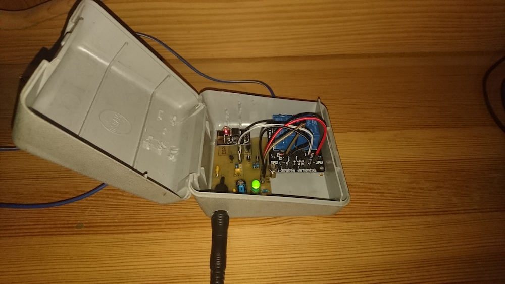
Software - ESP
The software on the ESP is pretty simple. It just connects to a predefined Wifi network and waits for a TCP connection. If a matching command is received, the GPIO port is pulled to ground and switches the relay for two seconds.
Software - Android
Next i created a simple Android App to trigger the relay with my phone in the same Wifi network. 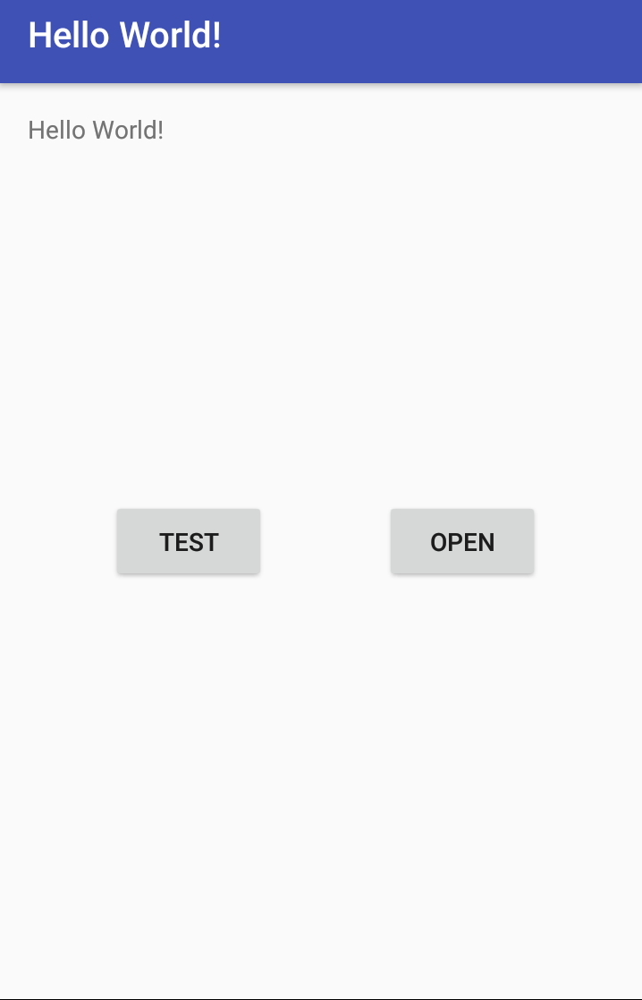
Conclusion
Designing the board with Eagle was harder then expected, mostly to get the routing as nice as possible. Also the power supply to the ESP has to be solid or you get unexpected behavior. Creating an Android App is in the beginning tricky, just to get an empty App with two buttons. The whole setup is pretty reliable and works 24h/7 without problems.